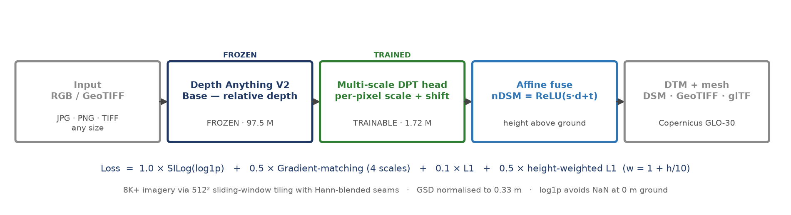
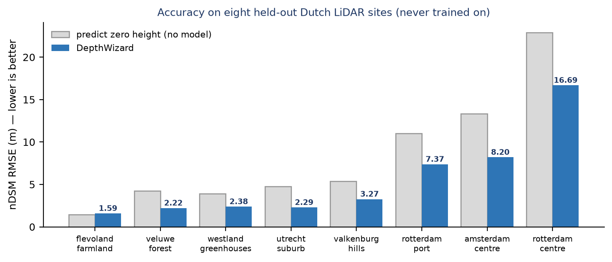
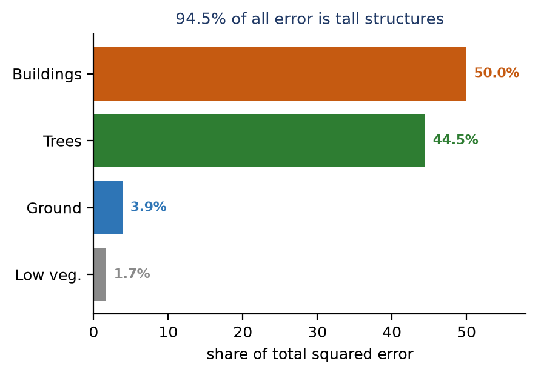
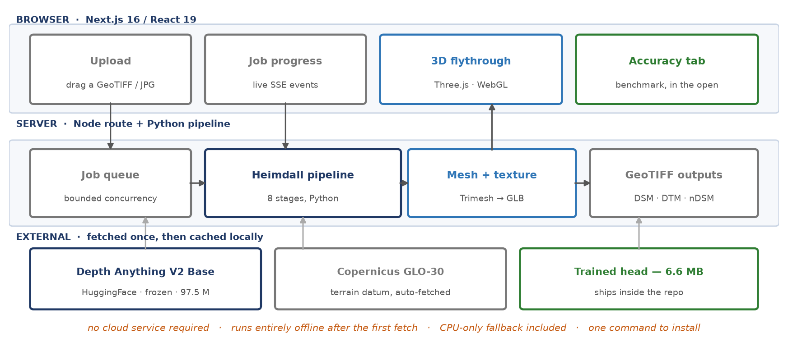
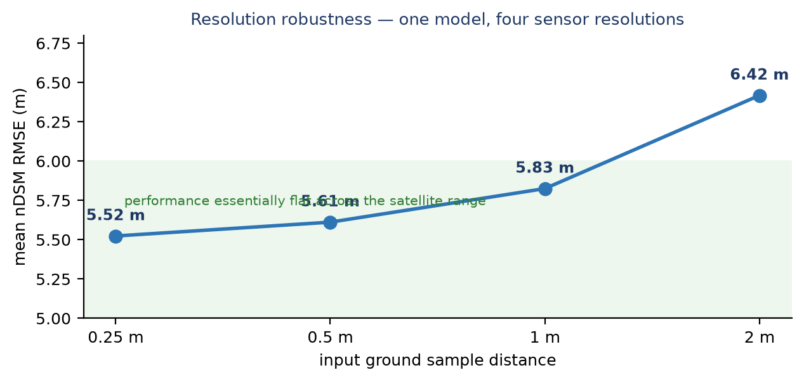

Everything needed to build the six-slide SIH 2026 idea submission, with every figure
traced to a measurement in the repository. Prepared 29 September 2026 against the shipped model
(decoder_best.pth, epoch 28). This is source material, not slide copy — it is
deliberately longer than the deck.
| Section | Use it for |
|---|---|
| §2 Corrections | Read before writing any slide. The old deck describes a different system. |
| §3–§8 | One section per slide, in template order. Text in bordered boxes is close to slide-ready; the rest is background. |
| §9–§14 | Appendices — numbers, experiment log, limitations, prepared answers, shippability. |
| Figures 1–5 | Print-ready at 200 dpi. Drop straight into slides. |
| Item | Old deck says | Current reality | Why it changed |
|---|---|---|---|
| Backbone | Depth Anything V3 Metric-Large, ~335 M | Depth Anything V2 Base, 97.5 M, frozen | Metric models assume a pinhole camera and collapse on nadir orthomosaics (correlation with true height 0.06). Relative-depth models work: DA2-Base reaches 0.41 frozen. |
| Head | ASPP multi-dilation head | Multi-scale DPT-pyramid head, 1.72 M trainable | Decoding the full feature pyramid beat a single-scale head; ASPP was the earlier design. |
| Training data | GAMUS, 524 tiles | 7 804 tiles — 5 004 GAMUS + 2 800 Dutch AHN LiDAR at two resolutions | 524 was a subset. GAMUS alone is 87% urban, so AHN adds forest, farmland and hills. |
| Epochs | 78 | 30 (best at epoch 28) | Different run entirely. |
| Headline accuracy | 2.18 m RMSE | 5.50 m RMSE on eight held-out LiDAR sites | 2.18 m was in-domain validation. 5.50 m is measured on Dutch sites never seen in training, scored against airborne LiDAR — a far harder and more honest test. |
| Comparison claim | "3.9× improvement over the heuristic baseline" | 1.52× better than predicting zero height (8.37 m → 5.50 m) | Use a baseline a judge can verify. Predict-zero is the standard reference for height estimation. |
| Loss | 1.0×SILog + 0.5×Gradient + 0.1×L1 | …+ 0.5 × height-weighted L1 (weight = 1 + h/10) | SILog on log1p compresses tall objects: a 60 m error on a tower scored only ~3× a 0.5 m kerb error. Adding the weighted term cut RMSE from 5.68 to 5.50 m. |
| Inference | ~1–2 s per tile | 4.5 s per 400 m site (1600×1600 px) on Apple MPS | Measured across the eight benchmark sites. |
| Field | Value |
|---|---|
| Problem Statement ID | 26175 |
| Problem Statement Title | DepthWizard — Single-View Height Estimation and 3D Flythrough |
| Organisation | ISRO — Space Applications Centre (SAC), Image Processing Division |
| PS Category | Software |
| Theme | Space Technology (confirm the exact wording on the portal) |
| Team ID / Team Name | from the portal |
Three bullets fit comfortably. Below are ready-to-use versions, each defensible.
"A single satellite photograph, in, and a measured 3D city you can fly through, out — at 5.50 m RMSE against airborne LiDAR on terrain the model has never seen."
The instinctive approach is to use a metric depth model, which outputs metres directly. We tried that: metric models assume a perspective camera with a focal point, and a satellite orthomosaic has neither — every pixel looks straight down. Correlation with true height was 0.06, effectively zero. A relative-depth model keeps working (0.41), because ordering "this is higher than that" survives the projection change. Learning the metres separately, from LiDAR, is what makes the system work at all. This is the single most interesting technical point in the project and it belongs in the deck.
PS 26175 asks for height from a single view and a 3D flythrough, and states that ISRO RGB-band optical satellite imagery will be used at final evaluation. Map each requirement to evidence — a judge can then tick them off while you talk.
| What the PS asks for | What we do | Evidence |
|---|---|---|
| Height from a single view | Frozen relative-depth backbone + trained metric head; no stereo, no LiDAR | 5.50 m RMSE vs airborne LiDAR, 8 held-out sites |
| Produce a DSM | nDSM from the model + Copernicus GLO-30 datum → absolute DSM, written as GeoTIFF | DSM, DTM and nDSM all exported, georeferenced |
| 3D flythrough | Textured glTF mesh in true metres, WebGL viewer with free-fly navigation | Runs in-browser; three demo scenes bundled |
| Works on satellite RGB, not just aerial | Every input normalised to the 0.33 m training GSD before inference | Flat 0.25 → 1 m (5.52 → 5.83 m); graceful at 2 m |
| Stability across urban, sparse, hilly, forested | Training set deliberately sampled across all four; each measured separately | urban 9.06 · sparse 1.59 · hilly 3.27 · forested 2.22 m |
| Standalone deployment | One command; CPU fallback; 6.6 MB head; offline after first fetch | ./run.sh on a clean machine |
log1p quietly under-weights exactly the structures the task is about: a 60 m error on
a tower scored barely 3× a 0.5 m kerb error. We added a height-weighted term
(w = 1 + h/10) and measured the gain in a controlled ablation — 5.68 → 5.50 m.
This is our own contribution, not something taken from a paper.
Figure 1 — Processing pipeline. Drop this straight into the slide; it replaces the old five-box diagram, which named the wrong backbone and the wrong head.
| Layer | Technology | Role |
|---|---|---|
| Model | PyTorch 2.x, Depth Anything V2 Base (HF transformers) | frozen relative-depth backbone |
| Geospatial | Rasterio / GDAL | CRS handling, GSD, GeoTIFF read & write |
| Mesh | Trimesh, scikit-image | textured terrain mesh, glTF/GLB export |
| Web | Next.js 16.3, React 19.2, TypeScript 5 | upload → job → viewer application |
| 3D | Three.js 0.185, React Three Fiber 9.7, drei 10.7 | WebGL flythrough, measurement, flood tool |
linear_units_factor, because a CRS in US survey feet would otherwise
produce heights 3.28× too large. Resample to the 0.33 m training GSD (upsampling capped at 3×).nDSM = ReLU(scale · depth + shift) gives height above ground.DSM = DTM + nDSM gives absolute elevation. Ground control points can correct any
residual offset or tilt.L = 1.0·SILog(log1p) + 0.5·GradientMatching(4 scales) + 0.1·L1 + 0.5·HeightWeighted
log1p keeps it finite at 0 m ground.1 + h/10 — ground counts 1×, a 10 m house 2×, a
20 m block 3×. Without it the objective barely cared about buildings: the log compressed a
60 m error on a tower to roughly three times the penalty of a 0.5 m error on a kerb, though it is
120× larger in metres. Adding it moved benchmark RMSE from 5.68 m to 5.50 m and cut
under-prediction bias from −0.64 m to −0.24 m.
Figure 2 — Per-site accuracy against a predict-zero baseline. We beat it on seven of eight landscapes. Good slide material: it shows range honestly rather than one flattering average.
./run.sh sets up a clean machine: detects an NVIDIA GPU and installs the matching
PyTorch build, else CPU.| Challenge | Mitigation | Evidence |
|---|---|---|
| Monocular depth has no absolute scale | Freeze the backbone; train a small head to predict per-pixel scale and shift against LiDAR | Frozen-backbone correlation 0.41 → 0.656 after the head |
| Metric depth models fail on nadir imagery | Use a relative-depth backbone and learn metres separately | Metric backbone correlation 0.06 vs relative 0.41 — measured, and the reason for the redesign |
| Tall structures dominate the error | Height-weighted loss term, w = 1 + h/10 |
5.68 → 5.50 m RMSE; bias −0.64 → −0.24 m |
| 8K+ imagery exceeds GPU memory | 512² sliding-window tiling, Hann-blended seams, working grid capped at 8192 px | Validated on a real 8K commercial satellite GeoTIFF |
| Ground at 0 m breaks log losses | log1p reformulation with variance clamping |
Stable across all 30 epochs, no NaN |
| Sensor resolution varies | Normalise every input to the 0.33 m training GSD | See stability table below |
| Training data is 87% urban | Added 2 800 Dutch AHN tiles sampled across forest, farmland and hills | Forest 2.22 m and hills 3.27 m RMSE — both well under the urban figure |

Figure 3 — Where the remaining error lives. Ground and low vegetation are already sub-metre; the work that remains is all in tall structures.
| User | What they get | What it replaces |
|---|---|---|
| Urban planning & infrastructure | 3D city context from archival or drone imagery; building heights, slope, line-of-sight | A commissioned photogrammetry or LiDAR survey — weeks and a budget |
| Disaster management | Rapid post-flood or post-quake surface refresh; the flood tool cuts a water plane through the scene at any level and shows what submerges | Waiting for a new LiDAR acquisition, which is exactly what is unavailable after a disaster |
| Defence & reconnaissance | Elevation over denied areas from one optical pass | Stereo tasking or an overflight that may not be possible |
| ISRO / SAC archives | Decades of single-view imagery become a source of elevation, retrospectively | Nothing — this data was never usable for height before |
The SIH template asks for these three explicitly. Keep one line each on the slide; the detail below is for questions.
| Category | Slide line | Backing |
|---|---|---|
| Social | Elevation data for regions no survey has reached — disaster response that does not wait for a LiDAR flight | After a flood or quake, existing elevation is stale precisely when it matters. One optical pass, which agencies already receive, becomes a surface model in seconds. The flood tool cuts a water plane at any level and shows what submerges. |
| Economic | Removes a survey line-item: no stereo tasking, no LiDAR flight, no InSAR pass | Airborne LiDAR over a city is a commissioned campaign costing weeks and a budget. This runs on a laptop in seconds from imagery already held. It also makes decades of archived single-view imagery newly useful for height — an asset with sunk cost and no current elevation value. |
| Environmental | No survey aircraft flown; forest canopy height from imagery already collected | Every avoided LiDAR sortie is avoided aviation fuel. Canopy height supports biomass and deforestation monitoring: our forest site scores 2.22 m RMSE against 4.25 m for assuming flat ground. |

Figure 4 — How the product is put together. Useful on the Technical Approach slide if there is room, or held back for the "is this deployable?" question.
| Component | What it is | Licence |
|---|---|---|
| Depth Anything V2 Base | Frozen monocular relative-depth backbone, 97.5 M params, DINOv2 ViT-B encoder | CC-BY-NC-4.0 — non-commercial |
| Depth Anything V3 Mono Large | Selectable alternative backbone, measured equivalent (median r 0.58 vs 0.56) | Apache-2.0 — permissive |
| GAMUS | Global Aerial Multi-Sensor Urban dataset; 5 004 training tiles used | CC-BY-4.0 — attribution |
| AHN4 via PDOK | Dutch national airborne LiDAR, flown 2020–2022; 2 800 training tiles + the 8-site benchmark | Dutch open government data |
| PDOK aerial orthophotos | 0.25 m national imagery, 2023 layer | Dutch open government data |
| Copernicus GLO-30 | 30 m global DEM, auto-fetched as the terrain datum | Free; ESA/Copernicus attribution |
| CartoDEM (ISRO/NRSC) | Optional Indian terrain datum via Bhoonidhi | Per Bhoonidhi terms |
| Ultralytics YOLOv8n-OBB | Optional vehicle ground prior; degrades gracefully if absent | AGPL-3.0 — strong copyleft |
github.com/Aryan241/Heimdall — keep the QR code from the old deck; the URL is unchanged.
| Site | Landscape | RMSE | MAE | Bias | r | Predict-zero RMSE |
|---|---|---|---|---|---|---|
amsterdam_centre | dense historic urban | 8.20 m | 5.55 m | -5.04 m | 0.86 | 13.32 m |
rotterdam_centre | high-rise urban | 16.69 m | 8.75 m | -6.18 m | 0.60 | 22.92 m |
utrecht_suburb | suburban residential | 2.29 m | 1.44 m | -0.50 m | 0.79 | 4.75 m |
rotterdam_port | industrial | 7.37 m | 4.66 m | -4.15 m | 0.84 | 11.01 m |
westland_greenhouses | greenhouses | 2.38 m | 1.77 m | -0.22 m | 0.58 | 3.90 m |
veluwe_forest | forest | 2.22 m | 1.12 m | -0.12 m | 0.79 | 4.25 m |
flevoland_farmland | sparse rural | 1.59 m | 0.28 m | +0.08 m | 0.07 | 1.43 m |
valkenburg_hills | hilly town | 3.27 m | 1.81 m | -0.64 m | 0.70 | 5.38 m |
| mean | 5.50 m | 3.17 m | — | 0.656 | 8.37 m | |
| Surface | MAE | RMSE | Bias | Share of total squared error |
|---|---|---|---|---|
| ground | 0.87 m | 1.70 m | +0.70 m | 3.9% |
| low vegetation | 0.95 m | 1.64 m | +0.70 m | 1.7% |
| tree | 6.60 m | 9.26 m | -5.95 m | 44.5% |
| building | 7.08 m | 9.35 m | -6.67 m | 50.0% |
Ground and low vegetation — the majority of pixels in any image — are sub-metre. Buildings and trees are under-predicted and carry 94.5% of the remaining error.
Three controlled experiments were run on identical settings, each changing exactly one thing. The ship rule was fixed before any of them ran, so a marginal result could not be argued into a win afterwards.
| Run | The one change | RMSE | Outcome |
|---|---|---|---|
| baseline | — | 5.68 m | previous shipped model |
| E1 | Height-weighted loss | 5.50 m | Shipped. The only change that improved the graded metrics. |
| E2 | Unfroze the last 4 transformer blocks (+28 M trainable) | 5.69 m | No effect — and would have grown the shipped artefact from 6.6 MB to ~390 MB. |
| E3 | 2.05× the training data | 5.75 m | No gain on RMSE — but the best median error (0.361 m vs 0.468 m) and best ground accuracy of all four models. More data improved typical accuracy, not outliers. |
| Question | Answer |
|---|---|
| "How can one image give height? Isn't that impossible?" | The absolute scale is not in the image — it is learned. The backbone gives relative ordering ("this is higher"); the head converts that to metres using patterns learned from 7 804 LiDAR-measured tiles: shadow length, texture gradient, apparent size, context. Where the image is genuinely ambiguous, we under-predict, and we publish that bias. |
| "Why not a metric depth model that outputs metres directly?" | We tried. Metric models assume a perspective camera; an orthomosaic has none. Correlation with true height was 0.06 — effectively zero. Relative depth survives the projection change at 0.41. |
| "5.50 m sounds large." | It is dominated by tall structures. Ground and low vegetation — most of any image — are sub-metre (0.87 m and 0.95 m). The alternative of predicting nothing scores 8.37 m. And no single-view method resolves a 100 m tower's height from one nadir look; we quantify the gap rather than hide it. |
| "Have you tested on ISRO imagery?" | Not yet — we have no ISRO LiDAR ground truth to score against. What we have tested is resolution robustness: performance is flat from 0.25 m to 1 m and degrades gracefully at 2 m, which spans the Cartosat range. The pipeline reads any georeferenced GeoTIFF. |
| "What happens with no GPU?" | It runs on CPU. run.sh detects hardware and installs the right PyTorch build. |
| "Is this reproducible?" | Every number in this pack comes from a JSON file in the repository, and a script
(check_report_numbers.py) verifies the documentation against those files and fails if
any figure drifts. |
The problem statement grades two halves. Below is an honest position on each, with the evidence we can produce on demand.
| Graded on | Status | Evidence / gap |
|---|---|---|
| RMSE vs LiDAR | Ready | 5.50 m over eight held-out sites; 8.37 m for predict-zero. Reproduced independently on a second machine. |
| MAE vs LiDAR | Ready | 3.17 m mean; 0.87 m on ground, 0.95 m on low vegetation. |
| Correlation | Ready | 0.656 mean; 0.86 on dense urban, 0.79 on forest. |
| Stability across urban / sparse / hilly / forested | Ready | All four landscapes measured separately: urban 9.06 m, hilly 3.27 m, forested 2.22 m, sparse 1.59 m. This is the criterion most entries will not have measured at all. |
| Behaviour on ISRO imagery | Untested | No ISRO LiDAR truth available to score against. Mitigated by the resolution sweep (flat 0.25 → 1 m), which spans the Cartosat range. Be upfront about this. |
| Graded on | Status | Evidence / gap |
|---|---|---|
| Projection accuracy | Ready | Mesh in true metres, no vertical exaggeration; measurement tool verified against scene extent; CRS units handled correctly including feet-based systems. |
| Visual fidelity | Ready | Full-resolution optical texture draped as UV, not per-vertex colour; flat shading preserved so roofs read as roofs. |
| Flythrough navigability | Ready | Orbit + free-fly; compass, measurement, elevation profile, flood-level tool. |
| Interface | Ready | Upload → job → viewer, with an Accuracy tab exposing the benchmark rather than hiding it. |
| Stability | Ready | 36 automated tests; concurrency slot-leak fixed and proven; degenerate inputs raise instead of emitting broken files. |
| Standalone deployment | Ready | ./run.sh on a clean machine; CPU fallback; 6.6 MB head; static demo deployed publicly. |
The same shipped model, run on the same eight sites, with the imagery degraded to coarser sensor resolutions by area averaging. This is the strongest available answer to 'will it work on our satellite data?'

Figure 5 — Accuracy against input resolution. Flat from 0.25 m to 1 m; graceful, not catastrophic, at 2 m.
| Input GSD | Mean RMSE | Change vs 0.25 m | Comparable sensor |
|---|---|---|---|
| 0.25 m | 5.52 m | +0.00 m | aerial / drone orthophoto |
| 0.5 m | 5.61 m | +0.09 m | WorldView-class panchromatic |
| 1 m | 5.83 m | +0.30 m | Cartosat-2 / high-res commercial |
| 2 m | 6.42 m | +0.89 m | Cartosat-1 / Sentinel-2 upsampled |
Achieved by normalising every input to the 0.33 m training GSD before inference, so the model always sees features at the scale it was trained on. Upsampling is capped at 3× so we never invent detail that is not there.